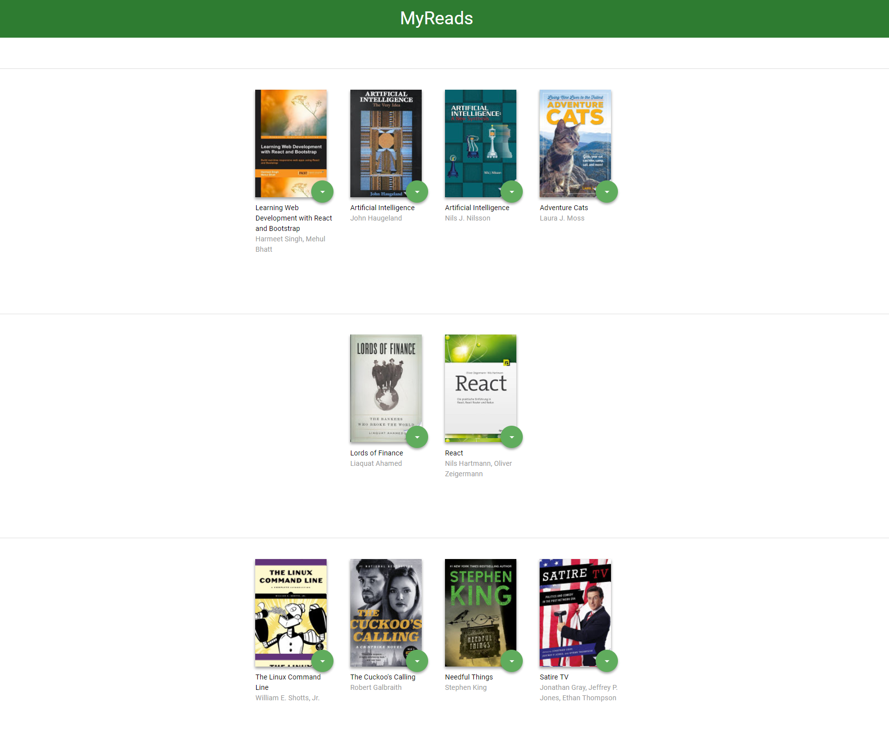

This application keeps track of a user's book selections from a static
database on a server. The user may query certain topics and then select
books from the search results to appear on one of three shelves on the
main page: "Currently Reading", "Want To Read", and "Read". The project
was completed using React, with a basic template and server provided by
Udacity.
Return To Projects Page